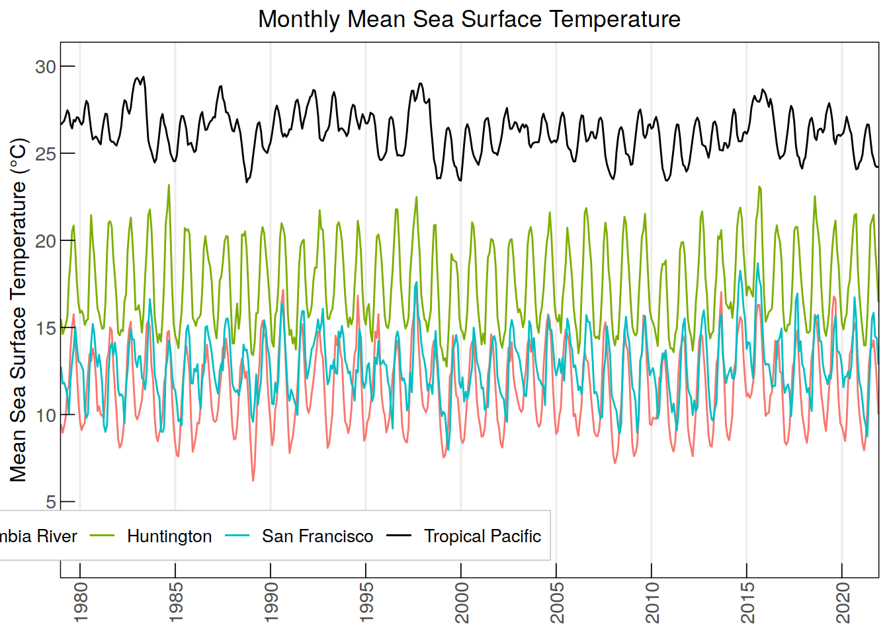
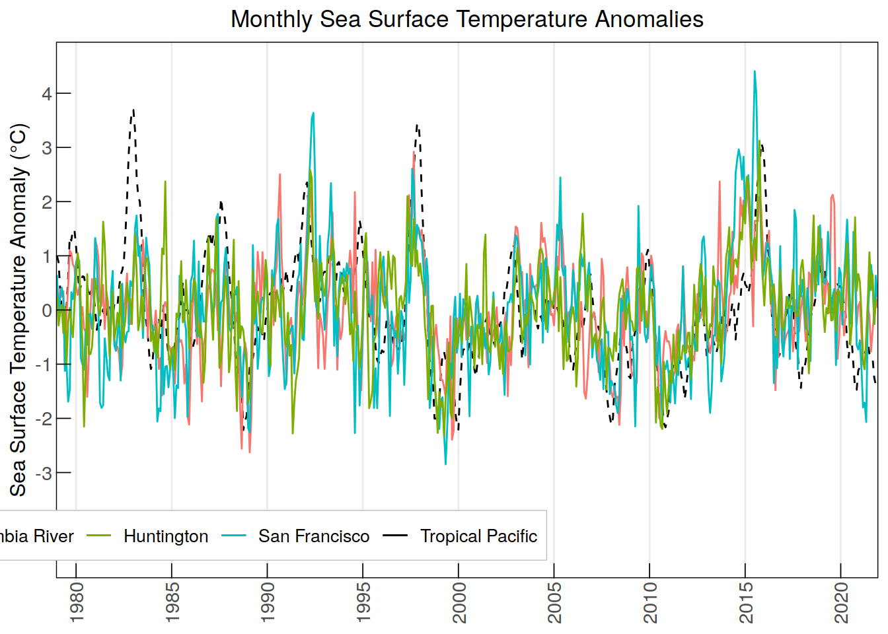
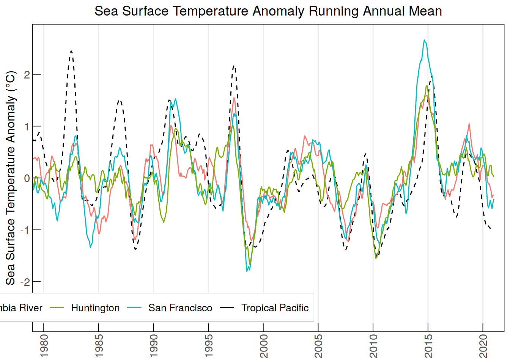
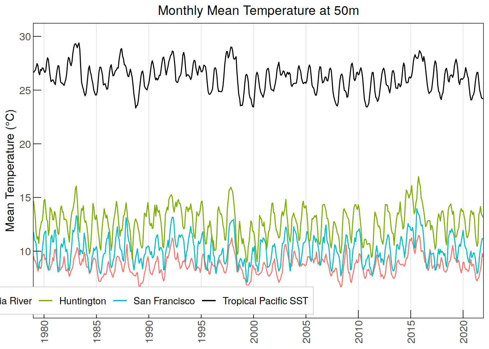
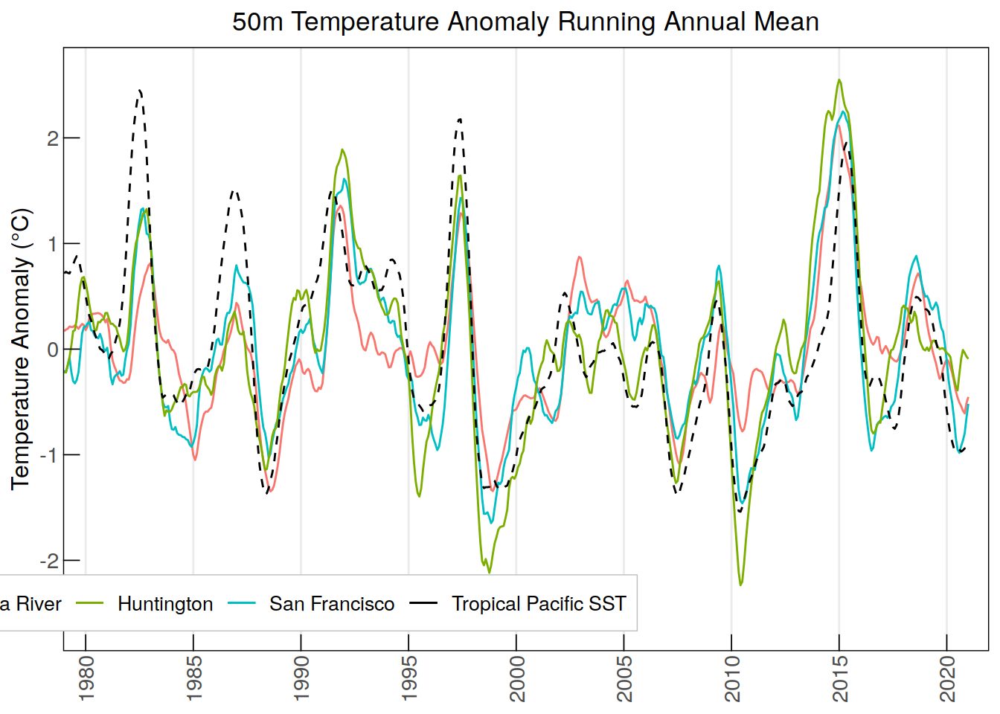
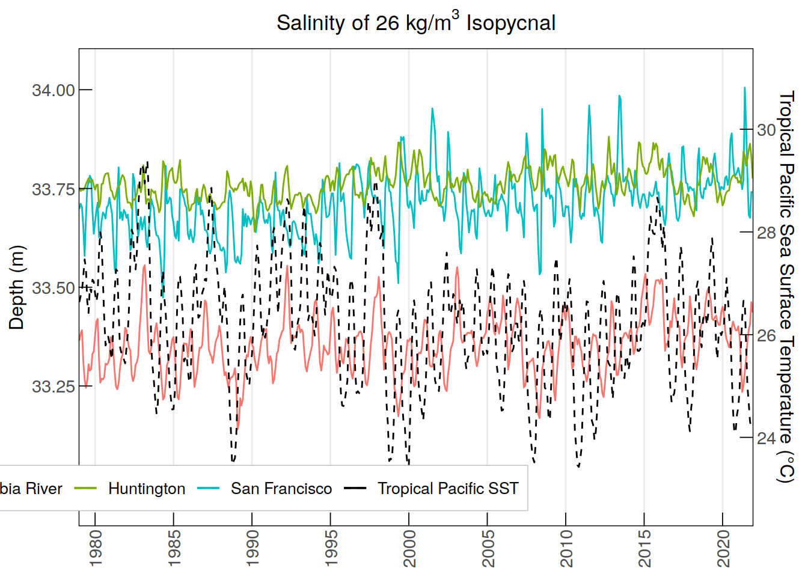
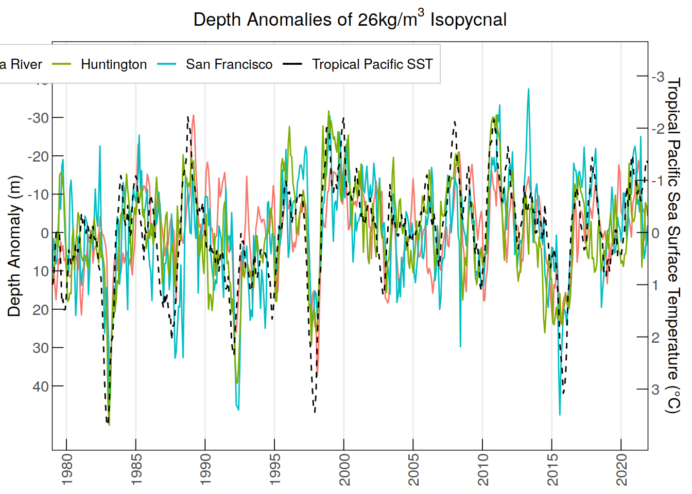
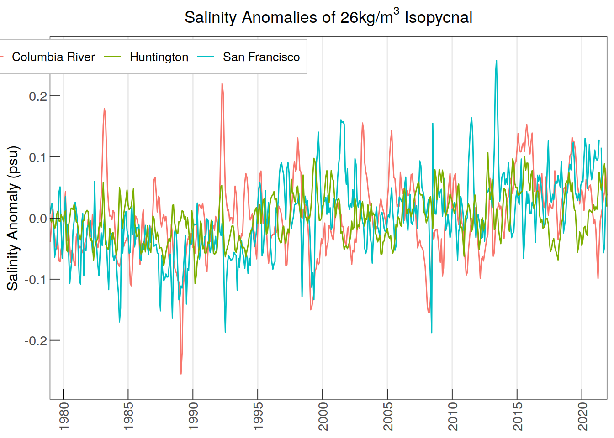
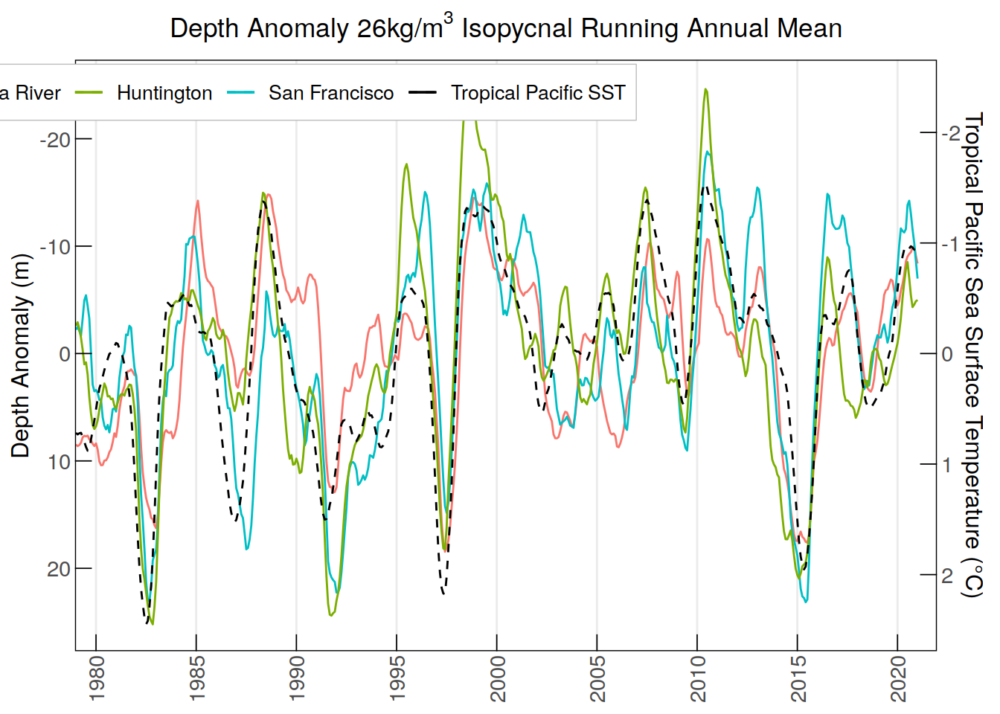
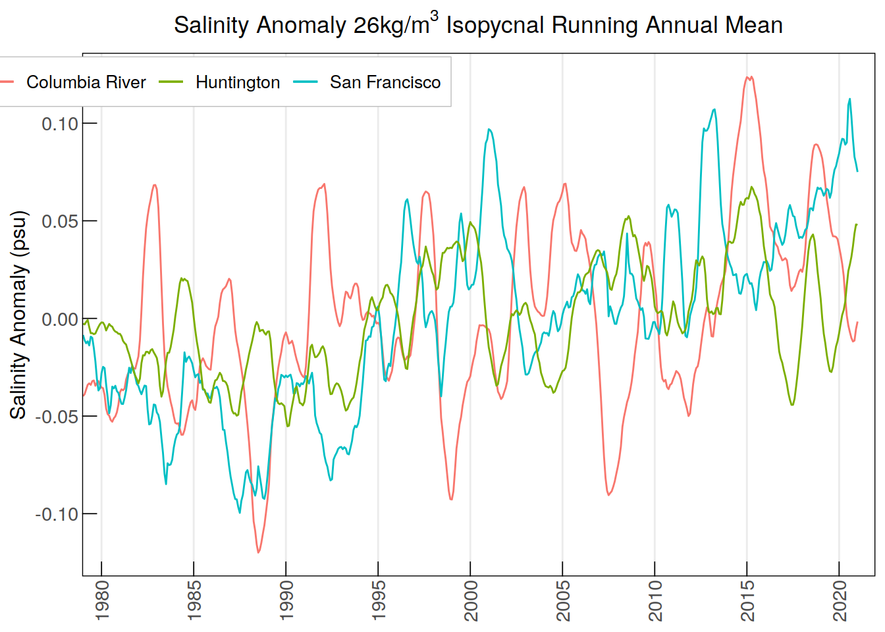

CCS ENSO evaluation metrics
Victoria Froh & Jens Daniel Müller
15 November, 2024
Last updated: 2024-11-15
Checks: 7 0
Knit directory: oae_ccs_roms/
This reproducible R Markdown analysis was created with workflowr (version 1.7.0). The Checks tab describes the reproducibility checks that were applied when the results were created. The Past versions tab lists the development history.
Great! Since the R Markdown file has been committed to the Git repository, you know the exact version of the code that produced these results.
Great job! The global environment was empty. Objects defined in the global environment can affect the analysis in your R Markdown file in unknown ways. For reproduciblity it’s best to always run the code in an empty environment.
The command set.seed(20240919) was run prior to running
the code in the R Markdown file. Setting a seed ensures that any results
that rely on randomness, e.g. subsampling or permutations, are
reproducible.
Great job! Recording the operating system, R version, and package versions is critical for reproducibility.
Nice! There were no cached chunks for this analysis, so you can be confident that you successfully produced the results during this run.
Great job! Using relative paths to the files within your workflowr project makes it easier to run your code on other machines.
Great! You are using Git for version control. Tracking code development and connecting the code version to the results is critical for reproducibility.
The results in this page were generated with repository version 2c9eb7e. See the Past versions tab to see a history of the changes made to the R Markdown and HTML files.
Note that you need to be careful to ensure that all relevant files for
the analysis have been committed to Git prior to generating the results
(you can use wflow_publish or
wflow_git_commit). workflowr only checks the R Markdown
file, but you know if there are other scripts or data files that it
depends on. Below is the status of the Git repository when the results
were generated:
Ignored files:
Ignored: .Rhistory
Ignored: .Rproj.user/
Unstaged changes:
Modified: analysis/_site.yml
Deleted: analysis/temperature_indices.Rmd
Modified: code/Workflowr_project_managment.R
Note that any generated files, e.g. HTML, png, CSS, etc., are not included in this status report because it is ok for generated content to have uncommitted changes.
These are the previous versions of the repository in which changes were
made to the R Markdown (analysis/enso_indices.Rmd) and HTML
(docs/enso_indices.html) files. If you’ve configured a
remote Git repository (see ?wflow_git_remote), click on the
hyperlinks in the table below to view the files as they were in that
past version.
| File | Version | Author | Date | Message |
|---|---|---|---|---|
| html | 2c9eb7e | vgfroh | 2024-11-15 | Build site. |
| Rmd | a2b33f0 | vgfroh | 2024-11-15 | Adding full enso indices file, removing just temperature file |
| html | fa48b39 | vgfroh | 2024-11-15 | Build site. |
| Rmd | 0437728 | vgfroh | 2024-11-15 | Adding full enso indices file |
Read this
this is the script to open the data
#loading packages
library(ncdf4)
library(stars)Loading required package: abindLoading required package: sfLinking to GEOS 3.11.1, GDAL 3.4.1, PROJ 7.2.1; sf_use_s2() is TRUEWARNING: different compile-time and runtime versions for GEOS found:Linked against: 3.11.1-CAPI-1.17.1 compiled against: 3.9.1-CAPI-1.14.2It is probably a good idea to reinstall sf, and maybe rgeos and rgdal toolibrary(tidyverse)── Attaching packages
───────────────────────────────────────
tidyverse 1.3.2 ──✔ ggplot2 3.4.4 ✔ purrr 1.0.2
✔ tibble 3.2.1 ✔ dplyr 1.1.3
✔ tidyr 1.3.0 ✔ stringr 1.5.0
✔ readr 2.1.3 ✔ forcats 0.5.2
── Conflicts ────────────────────────────────────────── tidyverse_conflicts() ──
✖ dplyr::filter() masks stats::filter()
✖ dplyr::lag() masks stats::lag()library(lubridate)Loading required package: timechange
Attaching package: 'lubridate'
The following objects are masked from 'package:base':
date, intersect, setdiff, unionlibrary(units)udunits database from /usr/share/udunits/udunits2.xml#Path to the files:
path_ROMSv2RG_results <-
"/net/sea/work/loher/ROMS/Alk_enh_formatted_2024_08/regrid_2024_10/1979-2009_2/"
#opening specific nc file to get overview
# view_nc <- nc_open(paste0(path_ROMSv2RG_results,
# "isopycnal_monthly_2021_SanFrancisco.nc"))
#
# print(view_nc)
#2x2 degree location boxes for each location + TrP 3.4 region:
#Columbia = 45N-47N, 124W-126W
#San Francisco = 36.5N-38.5N, 122.5W-124.5W
#Huntington = 32N-34N, 117W-119W
#Tropical Pacific = 5S-5N, 120W-170W
####################
#Sea Surface Temperature
# #All 3 regions colors
# ggplot() +
# geom_stars(data = tropP_jan2010_temp, aes(fill = "#C77CFF")) +
# geom_stars(data = colriv_jan2010_temp, aes(fill = "#F8766D")) +
# geom_stars(data = sanfran_jan2010_temp, aes(fill = "#00BFC4")) +
# geom_stars(data = hunt_jan2010_temp, aes(fill = "#7CAE00")) +
# borders("world", colour = "gray80", fill = "gray80") +
# labs(title = "CCS Test Regions",
# x = "Longitude",
# y = "Latitude") +
# theme_minimal() +
# scale_fill_identity(guide = "legend",
# labels = c("Tropical Pacific", "Columbia River",
# "San Francisco", "Huntington"),
# breaks = c("#C77CFF", "#F8766D", "#00BFC4", "#7CAE00")) +
# coord_quickmap(xlim = c(-170,-115), ylim = c(-10, 49.5))
#
#42 year time series of historical monthly averages for all 4 locations
#
years_past <- 1979:2021
locations <- c("ColumbiaRiver", "SanFrancisco", "Huntington", "tropPacific")
annual_cycles <- list()
annual_monthly_sst_list <- list()
for (i in locations){
#creating the 2x2 degree grid subsets for 3 CCS locations, tropP already set
subset <- if (i == "ColumbiaRiver") {
cbind(start = c(70, 40, 1, 1), count = c(16, 16, 1, 12))
} else if (i == "SanFrancisco") {
cbind(start = c(33, 39, 1, 1), count = c(16, 16, 1, 12))
} else if (i == "Huntington") {
cbind(start = c(50, 44, 1, 1), count = c(16, 16, 1, 12))
} else if (i == "tropPacific") {
cbind(start = c(1, 1, 1, 1), count = c(400, 80, 1, 12))
}
#reading in data for each location into a stars object
annual_cycles[[i]] <- do.call(c, lapply(years_past, function(year)(
suppressMessages(read_ncdf(paste0(path_ROMSv2RG_results,
"pactcs30_", year, "_monthly_", i, ".nc"),
ncsub = subset,
var = "temp",
proxy = FALSE
)))))
#converting time dimensions, extracting year-month
days_list <- st_get_dimension_values(annual_cycles[[i]], "time")
annual_cycles[[i]] <- st_set_dimensions(annual_cycles[[i]], "time",
values = format(ymd_hms(days_list),"%Y-%m"))
#converting each stars object into a dataframe and cleaning up
annual_cycles[[i]] <- annual_cycles[[i]] %>%
drop_units() %>%
as.data.frame(long = TRUE) %>%
select(-s_rho)
#creating a new data frame with the monthly average over each region
annual_monthly_sst_list[[i]] <- annual_cycles[[i]] %>%
group_by(time) %>%
summarise(mean_value = mean(temp, na.rm = TRUE), .groups = 'drop') %>%
rename(!!paste0(i, "_MonthlySST") := mean_value)
}
#rearranging all location lists into a single data frame
annual_monthly_sst <- reduce(annual_monthly_sst_list, left_join, by = "time")
#saving theme formatting for all plots in this code
custom_theme <- theme_minimal() +
theme(axis.text.x = element_text(angle = 90, vjust = 0.5, hjust = 1, size = 11),
axis.text.y = element_text(size = 11),
axis.ticks = element_line(linewidth = 0.3, color = "black"),
axis.ticks.length = unit(-0.3, "cm"),
axis.title.x = element_blank() ,
axis.title.y = element_text(size = 12),
plot.title = element_text(hjust = 0.5),
panel.grid.major.y = element_blank(),
panel.grid.minor = element_blank(),
legend.position = c(0.2, 0.08),
legend.text = element_text(size = 10),
legend.direction = "horizontal",
legend.background = element_rect(color = "grey", linewidth = 0.25),
panel.border = element_rect(color = "black", linewidth = 0.5, fill = NA))
#plotting all 4 time series of mean monthly SST
ggplot(data = annual_monthly_sst, aes(x = time, group = 1)) +
geom_line(aes(y = tropPacific_MonthlySST, color = "Tropical Pacific")) +
geom_line(aes(y = ColumbiaRiver_MonthlySST, color = "Columbia River")) +
geom_line(aes(y = SanFrancisco_MonthlySST, color = "San Francisco")) +
geom_line(aes(y = Huntington_MonthlySST, color = "Huntington")) +
labs(title = "Monthly Mean Sea Surface Temperature",
y = "Mean Sea Surface Temperature (\u00B0C)", color = NULL) +
scale_x_discrete(breaks = annual_monthly_sst$time[
seq(which(annual_monthly_sst$time == "1980-01"),
nrow(annual_monthly_sst), by = 60)], #breaks every 5 years
labels = substr(annual_monthly_sst$time[
seq(which(annual_monthly_sst$time == "1980-01"),
nrow(annual_monthly_sst), by = 60)], 1, 4)) + # Minor breaks every year
scale_y_continuous(limits = c(2, 30), breaks = seq(-10, 30, by = 5)) +
scale_color_manual(values = c("Tropical Pacific" = "black",
"Columbia River" = "#F8766D",
"San Francisco" = "#00BFC4",
"Huntington" = "#7CAE00")) +
custom_theme
| Version | Author | Date |
|---|---|---|
| fa48b39 | vgfroh | 2024-11-15 |
#clearing
rm(annual_cycles, days_list, subset, annual_monthly_sst_list, i)
#
#Calculating the anomaly index values (time series monthly sst - baseline)
#
#computing the mean over the full period for each month at each location
monthly_mean_baseline <- annual_monthly_sst %>%
mutate(month = format(as.Date(paste0(time, "-01")), "%m")) %>%
group_by(month) %>%
summarise(ColumbiaRiver_basemonthlySST = mean(ColumbiaRiver_MonthlySST,
na.rm = TRUE),
SanFrancisco_basemonthlySST = mean(SanFrancisco_MonthlySST, na.rm = TRUE),
Huntington_basemonthlySST = mean(Huntington_MonthlySST, na.rm = TRUE),
tropPacific_basemonthlySST = mean(tropPacific_MonthlySST, na.rm = TRUE),
.groups = 'drop')
#Combining data, Extracting the month from the time and adding a column for it
annual_monthly_sst$month <- substr(annual_monthly_sst$time, 6, 7)
anomaly_sst_data <- merge(annual_monthly_sst, monthly_mean_baseline,
by = "month")
#calculate the anomaly for each location/month (time series - base month mean)
for (place in locations) {
anomaly_col <- paste0(place, "_SSTanomaly")
anomaly_sst_data <- anomaly_sst_data %>%
mutate(!!anomaly_col := .data[[paste0(place, "_MonthlySST")]] -
.data[[paste0(place, "_basemonthlySST")]])
}
#reduce unneeded columns and sort chronologically
anomaly_sst <- anomaly_sst_data %>%
select(time, ColumbiaRiver_SSTanomaly, SanFrancisco_SSTanomaly,
Huntington_SSTanomaly, tropPacific_SSTanomaly) %>%
arrange(time)
#plot temperature anomalies
ggplot(data = anomaly_sst, aes(x = time, group = 1)) +
geom_line(aes(y = tropPacific_SSTanomaly, color = "Tropical Pacific"),
linetype = "dashed") +
geom_line(aes(y = ColumbiaRiver_SSTanomaly, color = "Columbia River")) +
geom_line(aes(y = SanFrancisco_SSTanomaly, color = "San Francisco")) +
geom_line(aes(y = Huntington_SSTanomaly, color = "Huntington")) +
labs(title = "Monthly Sea Surface Temperature Anomalies",
y = "Sea Surface Temperature Anomaly (\u00B0C)", color = NULL) +
scale_x_discrete(breaks = anomaly_sst$time[
seq(which(anomaly_sst$time == "1980-01"),
nrow(anomaly_sst), by = 60)], #breaks every 5 years
labels = substr(anomaly_sst$time[
seq(which(anomaly_sst$time == "1980-01"),
nrow(anomaly_sst), by = 60)], 1, 4)) + # Minor breaks every year
scale_y_continuous(limits = c(-4.5, 4.5), breaks = seq(-4, 4, by = 1)) +
scale_color_manual(values = c("Tropical Pacific" = "black",
"Columbia River" = "#F8766D",
"San Francisco" = "#00BFC4",
"Huntington" = "#7CAE00")) +
custom_theme
| Version | Author | Date |
|---|---|---|
| fa48b39 | vgfroh | 2024-11-15 |
#clearing
rm(anomaly_sst_data, anomaly_col, place)
#
#Computing running annual mean for the sst anomaly
#(mean temp for one year starting that month)
#
anomaly_sst_ram <- anomaly_sst
for (spot in locations) {
anom_col <- paste0(spot, "_SSTanomaly")
anom_ram_col <- paste0(spot, "_SSTanom_ram")
anomaly_sst_ram[[anom_ram_col]] <- NA #creates empty new column
for (val in 1:(nrow(anomaly_sst) - 11)) { #will not calculate for 2021
range <- anomaly_sst[[anom_col]][val:(val+11)]
#calculating and storing the running annual mean
anomaly_sst_ram[[anom_ram_col]][val] <- mean(range, na.rm = TRUE)
}
}
#plotting
ggplot(data = anomaly_sst_ram, aes(x = time, group = 1)) +
geom_line(aes(y = tropPacific_SSTanom_ram, color = "Tropical Pacific"),
linetype = "dashed") +
geom_line(aes(y = ColumbiaRiver_SSTanom_ram, color = "Columbia River")) +
geom_line(aes(y = SanFrancisco_SSTanom_ram, color = "San Francisco")) +
geom_line(aes(y = Huntington_SSTanom_ram, color = "Huntington")) +
labs(title = "Sea Surface Temperature Anomaly Running Annual Mean",
y = "Sea Surface Temperature Anomaly (\u00B0C)", color = NULL) +
scale_x_discrete(breaks = anomaly_sst_ram$time[
seq(which(anomaly_sst_ram$time == "1980-01"),
nrow(anomaly_sst_ram), by = 60)], #breaks every 5 years
labels = substr(anomaly_sst_ram$time[
seq(which(anomaly_sst_ram$time == "1980-01"),
nrow(anomaly_sst_ram), by = 60)], 1, 4)) + # Minor breaks every year
scale_y_continuous(limits = c(-2.7, 2.7), breaks = seq(-2, 2, by = 1)) +
scale_color_manual(values = c("Tropical Pacific" = "black",
"Columbia River" = "#F8766D",
"San Francisco" = "#00BFC4",
"Huntington" = "#7CAE00")) +
custom_themeWarning: Removed 11 rows containing missing values (`geom_line()`).
Removed 11 rows containing missing values (`geom_line()`).
Removed 11 rows containing missing values (`geom_line()`).
Removed 11 rows containing missing values (`geom_line()`).
| Version | Author | Date |
|---|---|---|
| fa48b39 | vgfroh | 2024-11-15 |
#Clearing
rm(anom_col, anom_ram_col, spot, val)
#
#Calculating correlation coefficients, pearson correlation test
#
cor.test(anomaly_sst$tropPacific_SSTanomaly, anomaly_sst$ColumbiaRiver_SSTanomaly)
Pearson's product-moment correlation
data: anomaly_sst$tropPacific_SSTanomaly and anomaly_sst$ColumbiaRiver_SSTanomaly
t = 11.459, df = 514, p-value < 2.2e-16
alternative hypothesis: true correlation is not equal to 0
95 percent confidence interval:
0.3795583 0.5172754
sample estimates:
cor
0.4510981 cor.test(anomaly_sst$tropPacific_SSTanomaly, anomaly_sst$SanFrancisco_SSTanomaly)
Pearson's product-moment correlation
data: anomaly_sst$tropPacific_SSTanomaly and anomaly_sst$SanFrancisco_SSTanomaly
t = 11.202, df = 514, p-value < 2.2e-16
alternative hypothesis: true correlation is not equal to 0
95 percent confidence interval:
0.3708242 0.5097910
sample estimates:
cor
0.4429644 cor.test(anomaly_sst$tropPacific_SSTanomaly, anomaly_sst$Huntington_SSTanomaly)
Pearson's product-moment correlation
data: anomaly_sst$tropPacific_SSTanomaly and anomaly_sst$Huntington_SSTanomaly
t = 9.1446, df = 514, p-value < 2.2e-16
alternative hypothesis: true correlation is not equal to 0
95 percent confidence interval:
0.2973503 0.4459868
sample estimates:
cor
0.3740682 cor.test(anomaly_sst_ram$tropPacific_SSTanom_ram,
anomaly_sst_ram$ColumbiaRiver_SSTanom_ram)
Pearson's product-moment correlation
data: anomaly_sst_ram$tropPacific_SSTanom_ram and anomaly_sst_ram$ColumbiaRiver_SSTanom_ram
t = 20.621, df = 503, p-value < 2.2e-16
alternative hypothesis: true correlation is not equal to 0
95 percent confidence interval:
0.6265787 0.7214768
sample estimates:
cor
0.6768299 cor.test(anomaly_sst_ram$tropPacific_SSTanom_ram,
anomaly_sst_ram$SanFrancisco_SSTanom_ram)
Pearson's product-moment correlation
data: anomaly_sst_ram$tropPacific_SSTanom_ram and anomaly_sst_ram$SanFrancisco_SSTanom_ram
t = 19.568, df = 503, p-value < 2.2e-16
alternative hypothesis: true correlation is not equal to 0
95 percent confidence interval:
0.6048704 0.7042824
sample estimates:
cor
0.6574278 cor.test(anomaly_sst_ram$tropPacific_SSTanom_ram,
anomaly_sst_ram$Huntington_SSTanom_ram)
Pearson's product-moment correlation
data: anomaly_sst_ram$tropPacific_SSTanom_ram and anomaly_sst_ram$Huntington_SSTanom_ram
t = 14.243, df = 503, p-value < 2.2e-16
alternative hypothesis: true correlation is not equal to 0
95 percent confidence interval:
0.4708769 0.5955039
sample estimates:
cor
0.5361053 ####################
#Temperature at 50m Depth
#
#42 year time series of historical monthly averages for all 4 locations
#
locations_2 <- c("ColumbiaRiver", "SanFrancisco", "Huntington")
annual_cycles <- list()
annual_monthly_t50_list <- list()
for (j in locations_2){
#creating the 2x2 degree grid subsets for 3 CCS locations, tropP already set
subset <- if (j == "ColumbiaRiver") {
cbind(start = c(70, 40, 1), count = c(16, 16, 12))
} else if (j == "SanFrancisco") {
cbind(start = c(33, 39, 1), count = c(16, 16, 12))
} else if (j == "Huntington") {
cbind(start = c(50, 44, 1), count = c(16, 16, 12))
}
#reading in data for each location into a stars object
annual_cycles[[j]] <- do.call(c, lapply(years_past, function(year)(
suppressMessages(read_ncdf(paste0(path_ROMSv2RG_results,
"pactcs30_", year, "_monthly_", j, "_50m.nc"),
ncsub = subset,
var = "temp",
proxy = FALSE
)))))
#converting time dimensions, extracting year-month
days_list <- st_get_dimension_values(annual_cycles[[j]], "time")
annual_cycles[[j]] <- st_set_dimensions(annual_cycles[[j]], "time",
values = format(ymd_hms(days_list),"%Y-%m"))
#converting each stars object into a dataframe and cleaning up
annual_cycles[[j]] <- annual_cycles[[j]] %>%
drop_units() %>%
as.data.frame(long = TRUE)
#creating a new data frame with the monthly average over each region
annual_monthly_t50_list[[j]] <- annual_cycles[[j]] %>%
group_by(time) %>%
summarise(mean_value = mean(temp, na.rm = TRUE), .groups = 'drop') %>%
rename(!!paste0(j, "_MonthlyT_50m") := mean_value)
}
#rearranging all stored location lists into a single data frame
annual_monthly_t50 <- reduce(annual_monthly_t50_list, left_join, by = "time")
#plotting all 3 time series of mean monthly temperature at 50m depth
#setting color scheme for future plots
colors <- c("Tropical Pacific SST" = "black", "Columbia River" = "#F8766D",
"San Francisco" = "#00BFC4", "Huntington" = "#7CAE00")
ggplot(data = annual_monthly_t50, aes(x = time, group = 1)) +
geom_line(aes(y = ColumbiaRiver_MonthlyT_50m, color = "Columbia River")) +
geom_line(aes(y = SanFrancisco_MonthlyT_50m, color = "San Francisco")) +
geom_line(aes(y = Huntington_MonthlyT_50m, color = "Huntington")) +
geom_line(data = annual_monthly_sst, aes(
x = time, y = tropPacific_MonthlySST, color = "Tropical Pacific SST",
group = 1)) +
labs(title = "Monthly Mean Temperature at 50m",
y = "Mean Temperature (\u00B0C)", color = NULL) +
scale_x_discrete(breaks = annual_monthly_t50$time[
seq(which(annual_monthly_t50$time == "1980-01"),
nrow(annual_monthly_t50), by = 60)], #breaks every 5 years
labels = substr(annual_monthly_t50$time[
seq(which(annual_monthly_sst$time == "1980-01"),
nrow(annual_monthly_t50), by = 60)], 1, 4)) + # Minor breaks every year
scale_y_continuous(limits = c(5, 30), breaks = seq(10, 30, by = 5)) +
scale_color_manual(values = colors) +
custom_theme +
theme(legend.position = c(0.2, 0.06))
| Version | Author | Date |
|---|---|---|
| fa48b39 | vgfroh | 2024-11-15 |
#Clearing
rm(subset, annual_cycles, days_list, annual_monthly_t50_list, j)
#
#Calculating the anomaly index values (time series monthly T - baseline)
#
#computing the mean over the full period for each month at each location
monthly_mean_baseline_t50 <- annual_monthly_t50 %>%
mutate(month = format(as.Date(paste0(time, "-01")), "%m")) %>%
group_by(month) %>%
summarise(ColumbiaRiver_basemonthlyT50 = mean(ColumbiaRiver_MonthlyT_50m,
na.rm = TRUE),
SanFrancisco_basemonthlyT50 = mean(SanFrancisco_MonthlyT_50m, na.rm = TRUE),
Huntington_basemonthlyT50 = mean(Huntington_MonthlyT_50m, na.rm = TRUE),
.groups = 'drop')
#Combining data, extracting the month from the time and adding a column for it
annual_monthly_t50$month <- substr(annual_monthly_t50$time, 6, 7)
anomaly_t50_data <- merge(annual_monthly_t50, monthly_mean_baseline_t50,
by = "month")
#calculate the anomaly for each location/month (time series - base month mean)
for (place in locations_2) {
anomaly_col <- paste0(place, "_T50anomaly")
anomaly_t50_data <- anomaly_t50_data %>%
mutate(!!anomaly_col := .data[[paste0(place, "_MonthlyT_50m")]] -
.data[[paste0(place, "_basemonthlyT50")]])
}
#reduce unneeded columns and sort chronologically
anomaly_t50 <- anomaly_t50_data %>%
select(time, ColumbiaRiver_T50anomaly, SanFrancisco_T50anomaly,
Huntington_T50anomaly) %>%
arrange(time)
#plot temperature anomalies
ggplot(data = anomaly_t50, aes(x = time, group = 1)) +
geom_line(aes(y = ColumbiaRiver_T50anomaly, color = "Columbia River")) +
geom_line(aes(y = SanFrancisco_T50anomaly, color = "San Francisco")) +
geom_line(aes(y = Huntington_T50anomaly, color = "Huntington")) +
geom_line(data = anomaly_sst,
aes(x = time, y = tropPacific_SSTanomaly,
color = "Tropical Pacific SST", group = 1), linetype = "dashed") +
labs(title = "Monthly 50m Temperature Anomalies",
y = "Temperature Anomaly (\u00B0C)", color = NULL) +
scale_x_discrete(breaks = anomaly_t50$time[
seq(which(anomaly_t50$time == "1980-01"),
nrow(anomaly_t50), by = 60)], #breaks every 5 years
labels = substr(anomaly_t50$time[
seq(which(anomaly_t50$time == "1980-01"),
nrow(anomaly_t50), by = 60)], 1, 4)) + # Minor breaks every year
scale_y_continuous(limits = c(-4.4, 4.4), breaks = seq(-4, 4, by = 1)) +
scale_color_manual(values = colors) +
custom_theme
| Version | Author | Date |
|---|---|---|
| fa48b39 | vgfroh | 2024-11-15 |
#Clearing
rm(anomaly_t50_data, place, anomaly_col)
#
#Computing running annual mean for the 50m T anomaly
#(mean temp for one year starting that month)
#
anomaly_t50_ram <- anomaly_t50
for (spot in locations_2) {
anom_col <- paste0(spot, "_T50anomaly")
anom_ram_col <- paste0(spot, "_T50anom_ram")
anomaly_t50_ram[[anom_ram_col]] <- NA #creates empty new column
for (val in 1:(nrow(anomaly_t50) - 11)) { #will not calculate for 2021
range <- anomaly_t50[[anom_col]][val:(val+11)]
#calculating and storing the running annual mean
anomaly_t50_ram[[anom_ram_col]][val] <- mean(range, na.rm = TRUE)
}
}
#plotting
ggplot(data = anomaly_t50_ram, aes(x = time, group = 1)) +
geom_line(aes(y = ColumbiaRiver_T50anom_ram, color = "Columbia River")) +
geom_line(aes(y = SanFrancisco_T50anom_ram, color = "San Francisco")) +
geom_line(aes(y = Huntington_T50anom_ram, color = "Huntington")) +
geom_line(data = anomaly_sst_ram,
aes(x = time, y = tropPacific_SSTanom_ram,
color = "Tropical Pacific SST", group = 1), linetype = "dashed") +
labs(title = "50m Temperature Anomaly Running Annual Mean",
y = "Temperature Anomaly (\u00B0C)", color = NULL) +
scale_x_discrete(breaks = anomaly_t50_ram$time[
seq(which(anomaly_t50_ram$time == "1980-01"),
nrow(anomaly_t50_ram), by = 60)], #breaks every 5 years
labels = substr(anomaly_t50_ram$time[
seq(which(anomaly_t50_ram$time == "1980-01"),
nrow(anomaly_t50_ram), by = 60)], 1, 4)) + # Minor breaks every year
scale_y_continuous(limits = c(-2.6, 2.6), breaks = seq(-2, 2, by = 1)) +
scale_color_manual(values = colors) +
custom_themeWarning: Removed 11 rows containing missing values (`geom_line()`).
Removed 11 rows containing missing values (`geom_line()`).
Removed 11 rows containing missing values (`geom_line()`).
Removed 11 rows containing missing values (`geom_line()`).
| Version | Author | Date |
|---|---|---|
| fa48b39 | vgfroh | 2024-11-15 |
#Clearing
rm(anom_col, anom_ram_col, spot, val)
#
#Calculating correlation coefficients, pearson correlation test
#
cor.test(anomaly_sst$tropPacific_SSTanomaly, anomaly_t50$ColumbiaRiver_T50anomaly)
Pearson's product-moment correlation
data: anomaly_sst$tropPacific_SSTanomaly and anomaly_t50$ColumbiaRiver_T50anomaly
t = 13.681, df = 514, p-value < 2.2e-16
alternative hypothesis: true correlation is not equal to 0
95 percent confidence interval:
0.4504437 0.5772481
sample estimates:
cor
0.5166736 cor.test(anomaly_sst$tropPacific_SSTanomaly, anomaly_t50$SanFrancisco_T50anomaly)
Pearson's product-moment correlation
data: anomaly_sst$tropPacific_SSTanomaly and anomaly_t50$SanFrancisco_T50anomaly
t = 18.17, df = 514, p-value < 2.2e-16
alternative hypothesis: true correlation is not equal to 0
95 percent confidence interval:
0.5698279 0.6752533
sample estimates:
cor
0.6253862 cor.test(anomaly_sst$tropPacific_SSTanomaly, anomaly_t50$Huntington_T50anomaly)
Pearson's product-moment correlation
data: anomaly_sst$tropPacific_SSTanomaly and anomaly_t50$Huntington_T50anomaly
t = 20.069, df = 514, p-value < 2.2e-16
alternative hypothesis: true correlation is not equal to 0
95 percent confidence interval:
0.6114987 0.7086071
sample estimates:
cor
0.6628309 cor.test(anomaly_sst_ram$tropPacific_SSTanom_ram,
anomaly_t50_ram$ColumbiaRiver_T50anom_ram)
Pearson's product-moment correlation
data: anomaly_sst_ram$tropPacific_SSTanom_ram and anomaly_t50_ram$ColumbiaRiver_T50anom_ram
t = 20.866, df = 503, p-value < 2.2e-16
alternative hypothesis: true correlation is not equal to 0
95 percent confidence interval:
0.6314263 0.7253006
sample estimates:
cor
0.6811531 cor.test(anomaly_sst_ram$tropPacific_SSTanom_ram,
anomaly_t50_ram$SanFrancisco_T50anom_ram)
Pearson's product-moment correlation
data: anomaly_sst_ram$tropPacific_SSTanom_ram and anomaly_t50_ram$SanFrancisco_T50anom_ram
t = 29.03, df = 503, p-value < 2.2e-16
alternative hypothesis: true correlation is not equal to 0
95 percent confidence interval:
0.7563172 0.8218557
sample estimates:
cor
0.7913492 cor.test(anomaly_sst_ram$tropPacific_SSTanom_ram,
anomaly_t50_ram$Huntington_T50anom_ram)
Pearson's product-moment correlation
data: anomaly_sst_ram$tropPacific_SSTanom_ram and anomaly_t50_ram$Huntington_T50anom_ram
t = 29.578, df = 503, p-value < 2.2e-16
alternative hypothesis: true correlation is not equal to 0
95 percent confidence interval:
0.7625939 0.8266109
sample estimates:
cor
0.7968279 ####################
#Isopycnal 20kg/m3 Depth and Salinity
#
#42 year time series of historical monthly averages for all 4 locations
#
annual_cycles <- list()
annual_monthly_iso26_list <- list()
for (j in locations_2){
#creating the 2x2 degree grid subsets for 3 CCS locations, tropP already set
subset <- if (j == "ColumbiaRiver") {
cbind(start = c(70, 40, 1), count = c(16, 16, 12))
} else if (j == "SanFrancisco") {
cbind(start = c(33, 39, 1), count = c(16, 16, 12))
} else if (j == "Huntington") {
cbind(start = c(50, 44, 1), count = c(16, 16, 12))
}
#reading in data for each location into a stars object
annual_cycles[[j]] <- do.call(c, lapply(years_past, function(year)(
suppressMessages(read_ncdf(paste0(path_ROMSv2RG_results,
"isopycnal_monthly_", year, "_", j, ".nc"),
ncsub = subset,
var = c("depth_26", "salt_26"),
proxy = FALSE
)))))
#converting time dimensions, extracting year-month
days_list <- st_get_dimension_values(annual_cycles[[j]], "time")
annual_cycles[[j]] <- st_set_dimensions(annual_cycles[[j]], "time",
values = format(ymd_hms(days_list),"%Y-%m"))
#converting each stars object into a dataframe and cleaning up
annual_cycles[[j]] <- annual_cycles[[j]] %>%
drop_units() %>%
as.data.frame(long = TRUE)
#Weird values showing up in SF, need to filter out
if (j == "SanFrancisco") {
annual_cycles[[j]] <- annual_cycles[[j]] %>%
filter(depth_26 >= 1, salt_26 >= 1)
}
#creating a new data frame with the monthly average over each region
annual_monthly_iso26_list[[j]] <- annual_cycles[[j]] %>%
group_by(time) %>%
summarise(mean_depth_26 = mean(depth_26, na.rm = TRUE),
mean_salt_26 = mean(salt_26, na.rm = TRUE), .groups = 'drop') %>%
rename(!!paste0(j, "_MonthlyIso26_Depth") := mean_depth_26,
!!paste0(j, "_MonthlyIso26_Sal") := mean_salt_26)
}Warning: ignoring unrecognized unit: PSUWarning: ignoring unrecognized unit: PSU
Warning: ignoring unrecognized unit: PSU
Warning: ignoring unrecognized unit: PSU
Warning: ignoring unrecognized unit: PSU
Warning: ignoring unrecognized unit: PSU
Warning: ignoring unrecognized unit: PSU
Warning: ignoring unrecognized unit: PSU
Warning: ignoring unrecognized unit: PSU
Warning: ignoring unrecognized unit: PSU
Warning: ignoring unrecognized unit: PSU
Warning: ignoring unrecognized unit: PSU
Warning: ignoring unrecognized unit: PSU
Warning: ignoring unrecognized unit: PSU
Warning: ignoring unrecognized unit: PSU
Warning: ignoring unrecognized unit: PSU
Warning: ignoring unrecognized unit: PSU
Warning: ignoring unrecognized unit: PSU
Warning: ignoring unrecognized unit: PSU
Warning: ignoring unrecognized unit: PSU
Warning: ignoring unrecognized unit: PSU
Warning: ignoring unrecognized unit: PSU
Warning: ignoring unrecognized unit: PSU
Warning: ignoring unrecognized unit: PSU
Warning: ignoring unrecognized unit: PSU
Warning: ignoring unrecognized unit: PSU
Warning: ignoring unrecognized unit: PSU
Warning: ignoring unrecognized unit: PSU
Warning: ignoring unrecognized unit: PSU
Warning: ignoring unrecognized unit: PSU
Warning: ignoring unrecognized unit: PSU
Warning: ignoring unrecognized unit: PSU
Warning: ignoring unrecognized unit: PSU
Warning: ignoring unrecognized unit: PSU
Warning: ignoring unrecognized unit: PSU
Warning: ignoring unrecognized unit: PSU
Warning: ignoring unrecognized unit: PSU
Warning: ignoring unrecognized unit: PSU
Warning: ignoring unrecognized unit: PSU
Warning: ignoring unrecognized unit: PSU
Warning: ignoring unrecognized unit: PSU
Warning: ignoring unrecognized unit: PSU
Warning: ignoring unrecognized unit: PSU
Warning: ignoring unrecognized unit: PSU
Warning: ignoring unrecognized unit: PSU
Warning: ignoring unrecognized unit: PSU
Warning: ignoring unrecognized unit: PSU
Warning: ignoring unrecognized unit: PSU
Warning: ignoring unrecognized unit: PSU
Warning: ignoring unrecognized unit: PSU
Warning: ignoring unrecognized unit: PSU
Warning: ignoring unrecognized unit: PSU
Warning: ignoring unrecognized unit: PSU
Warning: ignoring unrecognized unit: PSU
Warning: ignoring unrecognized unit: PSU
Warning: ignoring unrecognized unit: PSU
Warning: ignoring unrecognized unit: PSU
Warning: ignoring unrecognized unit: PSU
Warning: ignoring unrecognized unit: PSU
Warning: ignoring unrecognized unit: PSU
Warning: ignoring unrecognized unit: PSU
Warning: ignoring unrecognized unit: PSU
Warning: ignoring unrecognized unit: PSU
Warning: ignoring unrecognized unit: PSU
Warning: ignoring unrecognized unit: PSU
Warning: ignoring unrecognized unit: PSU
Warning: ignoring unrecognized unit: PSU
Warning: ignoring unrecognized unit: PSU
Warning: ignoring unrecognized unit: PSU
Warning: ignoring unrecognized unit: PSU
Warning: ignoring unrecognized unit: PSU
Warning: ignoring unrecognized unit: PSU
Warning: ignoring unrecognized unit: PSU
Warning: ignoring unrecognized unit: PSU
Warning: ignoring unrecognized unit: PSU
Warning: ignoring unrecognized unit: PSU
Warning: ignoring unrecognized unit: PSU
Warning: ignoring unrecognized unit: PSU
Warning: ignoring unrecognized unit: PSU
Warning: ignoring unrecognized unit: PSU
Warning: ignoring unrecognized unit: PSU
Warning: ignoring unrecognized unit: PSU
Warning: ignoring unrecognized unit: PSU
Warning: ignoring unrecognized unit: PSU
Warning: ignoring unrecognized unit: PSU
Warning: ignoring unrecognized unit: PSU
Warning: ignoring unrecognized unit: PSU
Warning: ignoring unrecognized unit: PSU
Warning: ignoring unrecognized unit: PSU
Warning: ignoring unrecognized unit: PSU
Warning: ignoring unrecognized unit: PSU
Warning: ignoring unrecognized unit: PSU
Warning: ignoring unrecognized unit: PSU
Warning: ignoring unrecognized unit: PSU
Warning: ignoring unrecognized unit: PSU
Warning: ignoring unrecognized unit: PSU
Warning: ignoring unrecognized unit: PSU
Warning: ignoring unrecognized unit: PSU
Warning: ignoring unrecognized unit: PSU
Warning: ignoring unrecognized unit: PSU
Warning: ignoring unrecognized unit: PSU
Warning: ignoring unrecognized unit: PSU
Warning: ignoring unrecognized unit: PSU
Warning: ignoring unrecognized unit: PSU
Warning: ignoring unrecognized unit: PSU
Warning: ignoring unrecognized unit: PSU
Warning: ignoring unrecognized unit: PSU
Warning: ignoring unrecognized unit: PSU
Warning: ignoring unrecognized unit: PSU
Warning: ignoring unrecognized unit: PSU
Warning: ignoring unrecognized unit: PSU
Warning: ignoring unrecognized unit: PSU
Warning: ignoring unrecognized unit: PSU
Warning: ignoring unrecognized unit: PSU
Warning: ignoring unrecognized unit: PSU
Warning: ignoring unrecognized unit: PSU
Warning: ignoring unrecognized unit: PSU
Warning: ignoring unrecognized unit: PSU
Warning: ignoring unrecognized unit: PSU
Warning: ignoring unrecognized unit: PSU
Warning: ignoring unrecognized unit: PSU
Warning: ignoring unrecognized unit: PSU
Warning: ignoring unrecognized unit: PSU
Warning: ignoring unrecognized unit: PSU
Warning: ignoring unrecognized unit: PSU
Warning: ignoring unrecognized unit: PSU
Warning: ignoring unrecognized unit: PSU
Warning: ignoring unrecognized unit: PSU
Warning: ignoring unrecognized unit: PSU#rearranging all stored location lists into a single data frame
annual_monthly_iso26 <- reduce(annual_monthly_iso26_list, left_join, by = "time")
#plotting all 3 time series of mean depth of the 26kg isopycnal
#get TrP SST index to match scale
ggplot(data = annual_monthly_iso26, aes(x = time, group = 1)) +
geom_line(aes(y = ColumbiaRiver_MonthlyIso26_Depth, color = "Columbia River")) +
geom_line(aes(y = SanFrancisco_MonthlyIso26_Depth, color = "San Francisco")) +
geom_line(aes(y = Huntington_MonthlyIso26_Depth, color = "Huntington")) +
geom_line(data = annual_monthly_sst,
aes(x = time, y = tropPacific_MonthlySST * 18 - 400, #scaling
color = "Tropical Pacific SST", group = 1), linetype = "dashed") +
labs(title = expression("Depth of 26 kg/m"^3*" Isopycnal"), y = "Depth (m)",
color = NULL) +
scale_x_discrete(breaks = annual_monthly_iso26$time[
seq(which(annual_monthly_iso26$time == "1980-01"),
nrow(annual_monthly_iso26), by = 60)], #breaks every 5 years
labels = substr(annual_monthly_iso26$time[
seq(which(annual_monthly_iso26$time == "1980-01"),
nrow(annual_monthly_iso26), by = 60)], 1, 4)) + # Minor breaks every year
scale_y_reverse(
limits = c(145, 15), breaks = seq(20, 140, by = 20), sec.axis =
sec_axis(~ (. + 400)/ 18,
name = "Tropical Pacific Sea Surface Temperature (°C)",
breaks = seq(23, 30, by = 1))) +
scale_color_manual(values = colors) +
custom_theme
| Version | Author | Date |
|---|---|---|
| fa48b39 | vgfroh | 2024-11-15 |
#plotting all 3 time series of mean salinity of the 26kg isopycnal
ggplot(data = annual_monthly_iso26, aes(x = time, group = 1)) +
geom_line(aes(y = ColumbiaRiver_MonthlyIso26_Sal, color = "Columbia River")) +
geom_line(aes(y = SanFrancisco_MonthlyIso26_Sal, color = "San Francisco")) +
geom_line(aes(y = Huntington_MonthlyIso26_Sal, color = "Huntington")) +
geom_line(data = annual_monthly_sst,
aes(x = time, y = tropPacific_MonthlySST * 0.13 + 30,
color = "Tropical Pacific SST", group = 1), linetype = "dashed") +
labs(title = expression("Salinity of 26 kg/m"^3*" Isopycnal"), y = "Depth (m)",
color = NULL) +
scale_x_discrete(breaks = annual_monthly_iso26$time[
seq(which(annual_monthly_iso26$time == "1980-01"),
nrow(annual_monthly_iso26), by = 60)], #breaks every 5 years
labels = substr(annual_monthly_iso26$time[
seq(which(annual_monthly_iso26$time == "1980-01"),
nrow(annual_monthly_iso26), by = 60)], 1, 4)) + # Minor breaks every year
scale_y_continuous(
limits = c(32.95, 34.05), breaks = seq(33, 34, by = 0.25),
sec.axis = sec_axis(~ (. - 30)/ 0.13,
name = "Tropical Pacific Sea Surface Temperature (°C)")) +
scale_color_manual(values = colors) +
custom_theme
| Version | Author | Date |
|---|---|---|
| fa48b39 | vgfroh | 2024-11-15 |
#Clearing
rm(subset, annual_cycles, days_list, annual_monthly_iso26_list, j)
#
#Calculating the anomaly index values (time series monthly T - baseline)
#
#computing the mean over the full period for each month at each location
monthly_mean_baseline_iso26 <- annual_monthly_iso26 %>%
mutate(month = format(as.Date(paste0(time, "-01")), "%m")) %>%
group_by(month) %>%
summarise(ColumbiaRiver_basemonthly26dep = mean(ColumbiaRiver_MonthlyIso26_Depth,
na.rm = TRUE),
ColumbiaRiver_basemonthly26sal = mean(ColumbiaRiver_MonthlyIso26_Sal,
na.rm = TRUE),
SanFrancisco_basemonthly26dep = mean(SanFrancisco_MonthlyIso26_Depth,
na.rm = TRUE),
SanFrancisco_basemonthly26sal = mean(SanFrancisco_MonthlyIso26_Sal,
na.rm = TRUE),
Huntington_basemonthly26dep = mean(Huntington_MonthlyIso26_Depth,
na.rm = TRUE),
Huntington_basemonthly26sal = mean(Huntington_MonthlyIso26_Sal,
na.rm = TRUE),, .groups = 'drop')
#Combining, extracting the month from the time and adding a column for it
annual_monthly_iso26$month <- substr(annual_monthly_iso26$time, 6, 7)
anomaly_iso26_data <- merge(annual_monthly_iso26, monthly_mean_baseline_iso26,
by = "month")
#calculate the anomaly for each location/month (time series - base month mean)
for (place in locations_2) {
anomaly_col <- paste0(place, "_iso26Dep_anomaly")
anomaly_iso26_data <- anomaly_iso26_data %>%
mutate(!!anomaly_col := .data[[paste0(place, "_MonthlyIso26_Depth")]] -
.data[[paste0(place, "_basemonthly26dep")]])
}
for (place2 in locations_2) {
anomaly_col <- paste0(place2, "_iso26Sal_anomaly")
anomaly_iso26_data <- anomaly_iso26_data %>%
mutate(!!anomaly_col := .data[[paste0(place2, "_MonthlyIso26_Sal")]] -
.data[[paste0(place2, "_basemonthly26sal")]])
}
#reduce unneeded columns and sort chronologically
anomaly_iso26 <- anomaly_iso26_data %>%
select(time, ColumbiaRiver_iso26Dep_anomaly, ColumbiaRiver_iso26Sal_anomaly,
SanFrancisco_iso26Dep_anomaly, SanFrancisco_iso26Sal_anomaly,
Huntington_iso26Dep_anomaly, Huntington_iso26Sal_anomaly) %>%
arrange(time)
#plot anomalies
#get TrP SST index to match scale
depanom_scale <- max(anomaly_iso26$ColumbiaRiver_Iso26Dep_anomaly,
anomaly_iso26$SanFrancisco_iso26Dep_anomaly,
anomaly_iso26$Huntington_iso26Dep_anomaly) /
max(anomaly_sst$tropPacific_SSTanomaly)
ggplot(data = anomaly_iso26, aes(x = time, group = 1)) +
geom_line(aes(y = ColumbiaRiver_iso26Dep_anomaly, color = "Columbia River")) +
geom_line(aes(y = SanFrancisco_iso26Dep_anomaly, color = "San Francisco")) +
geom_line(aes(y = Huntington_iso26Dep_anomaly, color = "Huntington")) +
geom_line(data = anomaly_sst,
aes(x = time, y = tropPacific_SSTanomaly * depanom_scale,
color = "Tropical Pacific SST", group = 1), linetype = "dashed") +
labs(title = expression("Depth Anomalies of 26kg/m"^3*" Isopycnal"),
y = "Depth Anomaly (m)", color = NULL) +
scale_x_discrete(breaks = anomaly_iso26$time[
seq(which(anomaly_iso26$time == "1980-01"),
nrow(anomaly_iso26), by = 60)], #breaks every 5 years
labels = substr(anomaly_iso26$time[
seq(which(anomaly_iso26$time == "1980-01"),
nrow(anomaly_iso26), by = 60)], 1, 4)) + # Minor breaks every year
scale_y_reverse(
limits = c(52, -45), breaks = seq(-40, 40, by = 10),
sec.axis = sec_axis(~ . / depanom_scale,
name = "Tropical Pacific Sea Surface Temperature (°C)",
breaks = seq(-3, 3, by = 1))) +
scale_color_manual(values = colors) +
custom_theme +
theme(legend.position = c(0.2, 0.945))
| Version | Author | Date |
|---|---|---|
| fa48b39 | vgfroh | 2024-11-15 |
ggplot(data = anomaly_iso26, aes(x = time, group = 1)) +
geom_line(aes(y = ColumbiaRiver_iso26Sal_anomaly, color = "Columbia River")) +
geom_line(aes(y = SanFrancisco_iso26Sal_anomaly, color = "San Francisco")) +
geom_line(aes(y = Huntington_iso26Sal_anomaly, color = "Huntington")) +
# geom_line(data = anomaly_sst, aes(x = time, y = tropPacific_SSTanomaly,
# color = "Tropical Pacific SST",
# group = 1)) +
labs(title = expression("Salinity Anomalies of 26kg/m"^3*" Isopycnal"),
y = "Salinity Anomaly (psu)", color = NULL) +
scale_x_discrete(breaks = anomaly_iso26$time[
seq(which(anomaly_iso26$time == "1980-01"),
nrow(anomaly_iso26), by = 60)], #breaks every 5 years
labels = substr(anomaly_iso26$time[
seq(which(anomaly_iso26$time == "1980-01"),
nrow(anomaly_iso26), by = 60)], 1, 4)) + # Minor breaks every year
scale_y_continuous(
limits = c(-0.27, 0.27), breaks = seq(-0.2, 0.2, by = 0.1)) +
scale_color_manual(values = colors) +
custom_theme +
theme(legend.position = c(0.16, 0.945))
| Version | Author | Date |
|---|---|---|
| fa48b39 | vgfroh | 2024-11-15 |
#Clearing
rm(anomaly_iso26_data, place, place2, anomaly_col)
#
#Computing running annual mean
#(mean for one year starting that month)
#
anomaly_iso26_ram <- anomaly_iso26
for (spot in locations_2) {
anom_col <- paste0(spot, "_iso26Dep_anomaly")
anom_ram_col <- paste0(spot, "_iso26Dep_anom_ram")
anomaly_iso26_ram[[anom_ram_col]] <- NA #creates empty new column
for (val in 1:(nrow(anomaly_iso26) - 11)) { #will not calculate for 2021
range <- anomaly_iso26[[anom_col]][val:(val+11)]
#calculating and storing the running annual mean
anomaly_iso26_ram[[anom_ram_col]][val] <- mean(range, na.rm = TRUE)
}
}
for (spot2 in locations_2) {
anom_col <- paste0(spot2, "_iso26Sal_anomaly")
anom_ram_col <- paste0(spot2, "_iso26Sal_anom_ram")
anomaly_iso26_ram[[anom_ram_col]] <- NA #creates empty new column
for (val in 1:(nrow(anomaly_iso26) - 11)) { #will not calculate for 2021
range <- anomaly_iso26[[anom_col]][val:(val+11)]
#calculating and storing the running annual mean
anomaly_iso26_ram[[anom_ram_col]][val] <- mean(range, na.rm = TRUE)
}
}
#plotting
#get TrP SST indice to match scale
depanomram_scale <- max(anomaly_iso26_ram$ColumbiaRiver_iso26Dep_anom_ram,
anomaly_iso26_ram$SanFrancisco_iso26Dep_anom_ram,
anomaly_iso26_ram$Huntington_iso26Dep_anom_ram,
na.rm = TRUE) /
max(anomaly_sst_ram$tropPacific_SSTanom_ram, na.rm = TRUE)
ggplot(data = anomaly_iso26_ram, aes(x = time, group = 1)) +
geom_line(aes(y = ColumbiaRiver_iso26Dep_anom_ram, color = "Columbia River")) +
geom_line(aes(y = SanFrancisco_iso26Dep_anom_ram, color = "San Francisco")) +
geom_line(aes(y = Huntington_iso26Dep_anom_ram, color = "Huntington")) +
geom_line(data = anomaly_sst_ram,
aes(x = time, y = tropPacific_SSTanom_ram * depanomram_scale,
color = "Tropical Pacific SST", group = 1), linetype = "dashed") +
labs(title =
expression("Depth Anomaly 26kg/m"^3*" Isopycnal Running Annual Mean"),
y = "Depth Anomaly (m)", color = NULL) +
scale_x_discrete(breaks = anomaly_iso26_ram$time[
seq(which(anomaly_iso26_ram$time == "1980-01"),
nrow(anomaly_iso26_ram), by = 60)], #breaks every 5 years
labels = substr(anomaly_iso26_ram$time[
seq(which(anomaly_iso26_ram$time == "1980-01"),
nrow(anomaly_iso26_ram), by = 60)], 1, 4)) + # Minor breaks every year
scale_y_reverse(
sec.axis = sec_axis(~ . / depanomram_scale,
name = "Tropical Pacific Sea Surface Temperature (°C)")) +
scale_color_manual(values = colors) +
custom_theme +
theme(legend.position = c(0.2, 0.945))Warning: Removed 11 rows containing missing values (`geom_line()`).Warning: Removed 11 rows containing missing values (`geom_line()`).
Removed 11 rows containing missing values (`geom_line()`).
Removed 11 rows containing missing values (`geom_line()`).
| Version | Author | Date |
|---|---|---|
| fa48b39 | vgfroh | 2024-11-15 |
ggplot(data = anomaly_iso26_ram, aes(x = time, group = 1)) +
geom_line(aes(y = ColumbiaRiver_iso26Sal_anom_ram, color = "Columbia River")) +
geom_line(aes(y = SanFrancisco_iso26Sal_anom_ram, color = "San Francisco")) +
geom_line(aes(y = Huntington_iso26Sal_anom_ram, color = "Huntington")) +
# geom_line(data = anomaly_sst_ram, aes(x = time, y = tropPacific_SSTanom_ram,
# color = "Tropical Pacific SST",
# group = 1)) +
labs(title =
expression("Salinity Anomaly 26kg/m"^3*" Isopycnal Running Annual Mean"),
y = "Salinity Anomaly (psu)", color = NULL) +
scale_x_discrete(breaks = anomaly_iso26_ram$time[
seq(which(anomaly_iso26_ram$time == "1980-01"),
nrow(anomaly_iso26_ram), by = 60)], #breaks every 5 years
labels = substr(anomaly_iso26_ram$time[
seq(which(anomaly_iso26_ram$time == "1980-01"),
nrow(anomaly_iso26_ram), by = 60)], 1, 4)) + # Minor breaks every year
scale_color_manual(values = colors) +
custom_theme +
theme(legend.position = c(0.16, 0.945))Warning: Removed 11 rows containing missing values (`geom_line()`).
Removed 11 rows containing missing values (`geom_line()`).
Removed 11 rows containing missing values (`geom_line()`).
| Version | Author | Date |
|---|---|---|
| fa48b39 | vgfroh | 2024-11-15 |
#Clearing
rm(anom_col, anom_ram_col, spot, val)
#
#Calculating correlation coefficients, pearson correlation test
#
cor.test(anomaly_sst$tropPacific_SSTanomaly,
anomaly_iso26$ColumbiaRiver_iso26Dep_anomaly)
Pearson's product-moment correlation
data: anomaly_sst$tropPacific_SSTanomaly and anomaly_iso26$ColumbiaRiver_iso26Dep_anomaly
t = 13.672, df = 514, p-value < 2.2e-16
alternative hypothesis: true correlation is not equal to 0
95 percent confidence interval:
0.4501456 0.5769988
sample estimates:
cor
0.5163994 cor.test(anomaly_sst$tropPacific_SSTanomaly,
anomaly_iso26$SanFrancisco_iso26Dep_anomaly)
Pearson's product-moment correlation
data: anomaly_sst$tropPacific_SSTanomaly and anomaly_iso26$SanFrancisco_iso26Dep_anomaly
t = 16.277, df = 514, p-value < 2.2e-16
alternative hypothesis: true correlation is not equal to 0
95 percent confidence interval:
0.5232391 0.6374454
sample estimates:
cor
0.583217 cor.test(anomaly_sst$tropPacific_SSTanomaly,
anomaly_iso26$Huntington_iso26Dep_anomaly)
Pearson's product-moment correlation
data: anomaly_sst$tropPacific_SSTanomaly and anomaly_iso26$Huntington_iso26Dep_anomaly
t = 21.743, df = 514, p-value < 2.2e-16
alternative hypothesis: true correlation is not equal to 0
95 percent confidence interval:
0.6443526 0.7346014
sample estimates:
cor
0.6921731 cor.test(anomaly_sst$tropPacific_SSTanomaly,
anomaly_iso26$ColumbiaRiver_iso26Sal_anomaly)
Pearson's product-moment correlation
data: anomaly_sst$tropPacific_SSTanomaly and anomaly_iso26$ColumbiaRiver_iso26Sal_anomaly
t = 10.671, df = 514, p-value < 2.2e-16
alternative hypothesis: true correlation is not equal to 0
95 percent confidence interval:
0.3524867 0.4940088
sample estimates:
cor
0.4258489 cor.test(anomaly_sst$tropPacific_SSTanomaly,
anomaly_iso26$SanFrancisco_iso26Sal_anomaly)
Pearson's product-moment correlation
data: anomaly_sst$tropPacific_SSTanomaly and anomaly_iso26$SanFrancisco_iso26Sal_anomaly
t = -3.8889, df = 514, p-value = 0.0001139
alternative hypothesis: true correlation is not equal to 0
95 percent confidence interval:
-0.25170998 -0.08397038
sample estimates:
cor
-0.1690641 cor.test(anomaly_sst$tropPacific_SSTanomaly,
anomaly_iso26$Huntington_iso26Sal_anomaly)
Pearson's product-moment correlation
data: anomaly_sst$tropPacific_SSTanomaly and anomaly_iso26$Huntington_iso26Sal_anomaly
t = -1.0857, df = 514, p-value = 0.2781
alternative hypothesis: true correlation is not equal to 0
95 percent confidence interval:
-0.13360241 0.03864384
sample estimates:
cor
-0.04783489 cor.test(anomaly_sst_ram$tropPacific_SSTanom_ram,
anomaly_iso26_ram$ColumbiaRiver_iso26Dep_anom_ram)
Pearson's product-moment correlation
data: anomaly_sst_ram$tropPacific_SSTanom_ram and anomaly_iso26_ram$ColumbiaRiver_iso26Dep_anom_ram
t = 21.637, df = 503, p-value < 2.2e-16
alternative hypothesis: true correlation is not equal to 0
95 percent confidence interval:
0.6462082 0.7369247
sample estimates:
cor
0.6943143 cor.test(anomaly_sst_ram$tropPacific_SSTanom_ram,
anomaly_iso26_ram$SanFrancisco_iso26Dep_anom_ram)
Pearson's product-moment correlation
data: anomaly_sst_ram$tropPacific_SSTanom_ram and anomaly_iso26_ram$SanFrancisco_iso26Dep_anom_ram
t = 26.463, df = 503, p-value < 2.2e-16
alternative hypothesis: true correlation is not equal to 0
95 percent confidence interval:
0.7237975 0.7970716
sample estimates:
cor
0.7628733 cor.test(anomaly_sst_ram$tropPacific_SSTanom_ram,
anomaly_iso26_ram$Huntington_iso26Dep_anom_ram)
Pearson's product-moment correlation
data: anomaly_sst_ram$tropPacific_SSTanom_ram and anomaly_iso26_ram$Huntington_iso26Dep_anom_ram
t = 33.791, df = 503, p-value < 2.2e-16
alternative hypothesis: true correlation is not equal to 0
95 percent confidence interval:
0.8044086 0.8580582
sample estimates:
cor
0.8331836 cor.test(anomaly_sst_ram$tropPacific_SSTanom_ram,
anomaly_iso26_ram$ColumbiaRiver_iso26Sal_anom_ram)
Pearson's product-moment correlation
data: anomaly_sst_ram$tropPacific_SSTanom_ram and anomaly_iso26_ram$ColumbiaRiver_iso26Sal_anom_ram
t = 15.168, df = 503, p-value < 2.2e-16
alternative hypothesis: true correlation is not equal to 0
95 percent confidence interval:
0.4972814 0.6173073
sample estimates:
cor
0.560228 cor.test(anomaly_sst_ram$tropPacific_SSTanom_ram,
anomaly_iso26_ram$SanFrancisco_iso26Sal_anom_ram)
Pearson's product-moment correlation
data: anomaly_sst_ram$tropPacific_SSTanom_ram and anomaly_iso26_ram$SanFrancisco_iso26Sal_anom_ram
t = -6.9664, df = 503, p-value = 1.023e-11
alternative hypothesis: true correlation is not equal to 0
95 percent confidence interval:
-0.3742042 -0.2149429
sample estimates:
cor
-0.2966346 cor.test(anomaly_sst_ram$tropPacific_SSTanom_ram,
anomaly_iso26_ram$Huntington_iso26Sal_anom_ram)
Pearson's product-moment correlation
data: anomaly_sst_ram$tropPacific_SSTanom_ram and anomaly_iso26_ram$Huntington_iso26Sal_anom_ram
t = -4.6819, df = 503, p-value = 3.661e-06
alternative hypothesis: true correlation is not equal to 0
95 percent confidence interval:
-0.2864971 -0.1192213
sample estimates:
cor
-0.2043505 vhjgvj
sessionInfo()R version 4.2.2 (2022-10-31)
Platform: x86_64-pc-linux-gnu (64-bit)
Running under: openSUSE Leap 15.5
Matrix products: default
BLAS: /usr/local/R-4.2.2/lib64/R/lib/libRblas.so
LAPACK: /usr/local/R-4.2.2/lib64/R/lib/libRlapack.so
locale:
[1] LC_CTYPE=en_US.UTF-8 LC_NUMERIC=C
[3] LC_TIME=en_US.UTF-8 LC_COLLATE=en_US.UTF-8
[5] LC_MONETARY=en_US.UTF-8 LC_MESSAGES=en_US.UTF-8
[7] LC_PAPER=en_US.UTF-8 LC_NAME=C
[9] LC_ADDRESS=C LC_TELEPHONE=C
[11] LC_MEASUREMENT=en_US.UTF-8 LC_IDENTIFICATION=C
attached base packages:
[1] stats graphics grDevices utils datasets methods base
other attached packages:
[1] units_0.8-0 lubridate_1.9.0 timechange_0.1.1 forcats_0.5.2
[5] stringr_1.5.0 dplyr_1.1.3 purrr_1.0.2 readr_2.1.3
[9] tidyr_1.3.0 tibble_3.2.1 ggplot2_3.4.4 tidyverse_1.3.2
[13] stars_0.6-0 sf_1.0-9 abind_1.4-5 ncdf4_1.19
[17] workflowr_1.7.0
loaded via a namespace (and not attached):
[1] httr_1.4.4 sass_0.4.4 jsonlite_1.8.3
[4] modelr_0.1.10 bslib_0.4.1 assertthat_0.2.1
[7] getPass_0.2-2 highr_0.9 googlesheets4_1.0.1
[10] cellranger_1.1.0 yaml_2.3.6 pillar_1.9.0
[13] backports_1.4.1 glue_1.6.2 digest_0.6.30
[16] promises_1.2.0.1 rvest_1.0.3 colorspace_2.0-3
[19] htmltools_0.5.3 httpuv_1.6.6 pkgconfig_2.0.3
[22] broom_1.0.5 haven_2.5.1 scales_1.2.1
[25] processx_3.8.0 whisker_0.4 later_1.3.0
[28] tzdb_0.3.0 git2r_0.30.1 proxy_0.4-27
[31] googledrive_2.0.0 farver_2.1.1 generics_0.1.3
[34] ellipsis_0.3.2 withr_2.5.0 cachem_1.0.6
[37] cli_3.6.1 crayon_1.5.2 magrittr_2.0.3
[40] readxl_1.4.1 evaluate_0.18 ps_1.7.2
[43] fs_1.5.2 fansi_1.0.3 xml2_1.3.3
[46] lwgeom_0.2-10 class_7.3-20 tools_4.2.2
[49] hms_1.1.2 gargle_1.2.1 lifecycle_1.0.3
[52] munsell_0.5.0 reprex_2.0.2 callr_3.7.3
[55] compiler_4.2.2 jquerylib_0.1.4 e1071_1.7-12
[58] RNetCDF_2.6-1 rlang_1.1.1 classInt_0.4-8
[61] grid_4.2.2 rstudioapi_0.15.0 labeling_0.4.2
[64] rmarkdown_2.18 gtable_0.3.1 DBI_1.1.3
[67] R6_2.5.1 ncmeta_0.3.5 knitr_1.41
[70] fastmap_1.1.0 utf8_1.2.2 rprojroot_2.0.3
[73] KernSmooth_2.23-20 stringi_1.7.8 parallel_4.2.2
[76] Rcpp_1.0.10 vctrs_0.6.4 dbplyr_2.2.1
[79] tidyselect_1.2.0 xfun_0.35